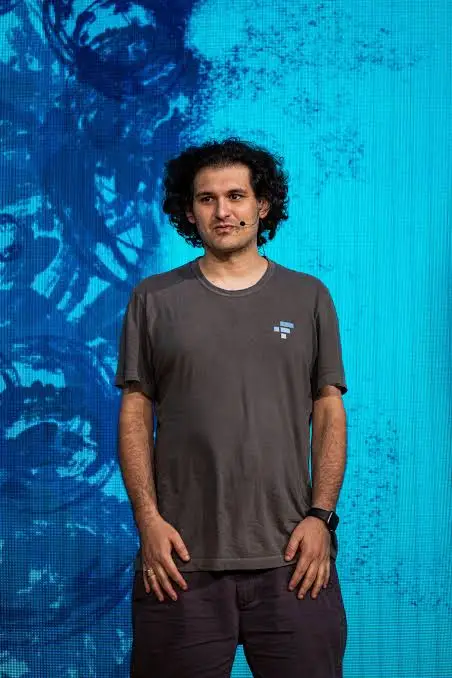

Коммерческий директор · Малый и средний бизнес
Собираю продажи малого и среднего бизнеса под ключ: трафик, конверсия и отдел продаж — весь цикл на мне.
10 лет в продажах · рост клиентов до ×100 по сделкам · команды до 80 человек
3 → 303
сделок в месяц — рост одного продукта за 10 лет
$1,5K → $150K
прибыль в месяц, в пике
1 → 80
человек в отделе продаж, собранном с нуля
10 лет
в роли коммерческого директора
01 — Обо мне
10 лет работаю коммерческим директором (Sales Director). Один из продуктов под моим управлением вырос с 3 сделок и $1 500 прибыли в месяц до 303 сделок и $150 000 прибыли в пике, а отдел продаж — с одного человека до команды в 80. Беру бизнес там, где продажи держатся на собственнике, и превращаю их в систему.
Не только скрипты и найм. Настраиваю привлечение (трафик, посадочные страницы, оффер), выстраиваю конверсию (CRM, воронка, скрипты, контроль качества) и собираю команду продаж под ключ. Отвечаю за весь путь клиента — от первого касания до оплаты.

02 — Что я умею
Найм, обучение, CRM, скрипты, планёрки, система мотивации. Команды от 1 до 80 человек.
Платный трафик, посадочные страницы, оффер и упаковка продукта — чтобы заявки были и были целевыми.
Вывод продукта на рынок, ценовые пакеты, партнёрские программы.
Разбор воронки, поиск узких мест и план роста на 3–5 конкретных шагов.
Консультирую проекты в DeFi и Web3 по продажам и выходу на аудиторию.
03 — Опыт
Веду коммерческую функцию для компаний малого и среднего бизнеса по договору: стратегия продаж, отдел, трафик, отчётность перед собственником.
Сопровождение, обучение и готовые решения для проектов и частных клиентов в криптовалютах.
Делаю лендинги и дашборды под задачи продаж — те же посадочные, что запускаю клиентам.
04 — Бесплатный аудит
Пришлите ссылку на сайт или проект. Бесплатно разберу воронку, сравню позиционирование с конкурентами и дам 3–5 конкретных шагов по продажам и трафику. Без обязательств и продающих звонков после.
Отправить проект на аудит05 — Контакты
Телеграм
@kras1k1654Телефон
095 937 99 92